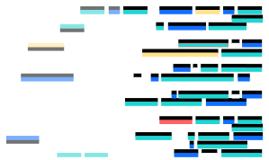

Features
Containerized Development
Start from scratch using lightweight containers that are easily reproducible to match your production environment.

Rapid Iteration
Lightning fast round-tripping through edit, build, and run allows real-time performance insights, regardless of what development phase you’re in.
Intelligent Feedback
Best practices and immediate feedback to help improve your application.
Diagnostic Services
Add capability at development time to improve problem determination in production.
Integrated DevOps Pipeline
Get into production fast with a preconfigured DevOps pipeline that can be tailored to your needs.
Open Source
Delivers the tools, flexibility and cross platform ability to help you improve application development.